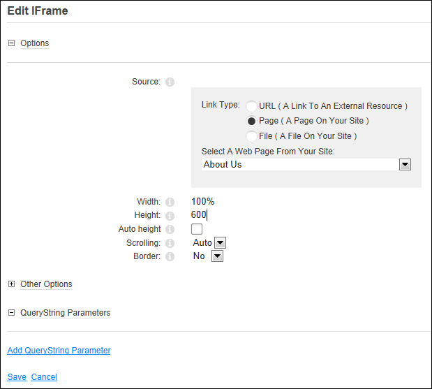

Displaying a Site Page in an IFrame
How to display an internal file such as an image or document in the IFrame module.
- Select Edit
 > Edit IFrame Options from the module actions menu to opens the Edit IFrame page.
> Edit IFrame Options from the module actions menu to opens the Edit IFrame page.
- Go to the Options section.
- At Source, select Page ( A Page On Your Site ).
- In the Select A Web Page From Your Site: select the required page name.
- The following optional settings are recommended:
- In the Width text box, enter the width for the IFrame in either pixels (E.g. 700) or as a percentage (E.g. 100%). If no width is entered a default height of 280 pixels is used.
- In the Height text box, enter a height for the IFrame in pixels. If no width is entered a default height of 130px will be used.
- At Auto Height, to automatically display the IFrame at 100% for this file - OR - to disable. This option only works for files located on your site.
- At Scrolling, select one of the following options:
- Auto: The scroll bar displays only when scrolling is required.
- No: No scroll bar is displayed. If this option is selected, ensure width and height settings are set to ensure all the content can be viewed as users will be unable to scroll.
- Yes: Scroll bars display at all times.
- At Border, select No to display the file without a border - OR - Select Yes to display a border around the IFramed content.

- Optional. Maximize
 the Other Options section to set any of the following fields:
the Other Options section to set any of the following fields:
- At Allow Transparency, to enable transparency on the IFrame- OR - to disallow transparency.
- In the Name text box, enter a name for this IFrame content. This name specifies a unique name of the IFrames (to use in scripts or as targets for links/IFrames).
- In the Tool Tip text box, enter the tool tip to be displayed when the user hovers their mouse over the IFrame.
- In the Css Style text box, enter a Css style to be used.
- In the Onload (Javascript) text box, enter the JavaScript to execute when the page loads. This field can only be set by Administrators.
- Click the Save button.

Displaying a Site Page in an IFrame